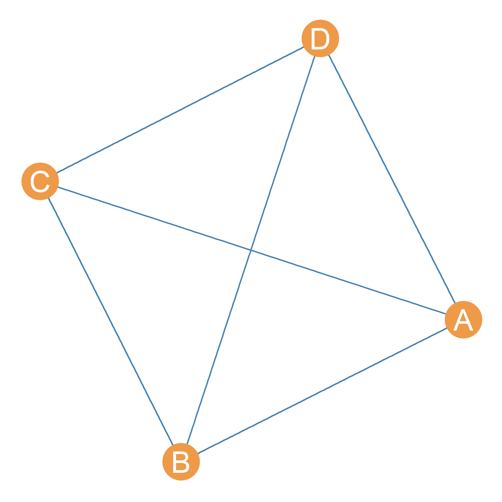

27 Clique Analysis
27.1 Categories Everywhere
A common feature of social life is to divide people into categories. For instance, there are ethnoracial categories (like Black, Asian, Hispanic, Pacific Islander), there are ethnonational categories (Philipino, Puerto Rican, Taiwanese, Nigerian, etc.), ethnolinguistic categories (based on the language(s) you speak), and ethnoreligious categories (based on the religion you practice). People also divide themselves into gender identity or sexual orientation categories. Sociologists like to divide up people based on things like categories based on such markers of “social position” like occupation, education, and social class. In the news, sometimes you hear about battles between “Millennials” (who kill everything) and out of touch “Boomers” (who hate everything), with sarcastic “Gen-Exers” in between. This is nothing but a division of people into categories based on age and generation (sometimes also referred to as cohort). The possibilities are endless!
Why are sociologists (and people) so obsessed with dividing up people into categories? Well, the basic idea is that category labels provide a mechanism to explain group formation, and they allow for sociologists to get a sense of the position people occupy in society. For instance, following the principle of homophily discussed in the lesson on ego networks, we may surmise that race, gender, and generation serve as principles of group formation (so that groups tend to be homogeneous with respect to age, gender, and generation). We may also say that a stockbroker who makes 500K a year and lives in Malibu occupies a very different social position than a high-school teacher who makes 50K a year and lives in the valley.
27.2 The Anti-Categorical Imperative
Social network analysis rejects the idea that the best way to divide up people into categories is to use pre-existing labels. This penchant has been labeled (riffing on the philosopher Immanuel Kant) the anti-categorical imperative (Emirbayer and Goodwin 1994). It is not that social network analysts necessarily reject the idea that people can be divided up into groups or that we should try to get a sense of the social position that people occupy. Instead, what network analysts insist on is that we should use the pattern of interconnections in social networks to come up with groups and assign people to social positions.
At its simplest, then, finding groups and assigning nodes to social position boil down to the same thing, which is to take the initial set of nodes in the graph and divide them up into (some times mutually exclusive, sometimes overlapping) subsets, so that nodes in the same subset belong to the same group or occupy the same social position in the network.
In network terms, then, what is the difference between being in the same group and occupying the same social position? Just like with the traditional sociological conceptions, the key difference is that belonging to the same group logically implies that you share a lot of connections with the other people in your group (e.g., a group of friends is necessarily linked to one another). However, being in the same social position does not require that you are connected to others in your same position. For instance, you can be doctor in New York City and share the same social position with a doctor in Los Angeles without necessarily being connected to that person. So in network analysis, nodes in a network who share the same position have similar patterns of connectivity with others without necessarily being connected to one another (although they could be!).
So the group and the social position imagery leads to two distinct ways of partitioning (a fancy word for “splitting”) the nodes in a graph (representing a social network) into subsets. One based on whether the subsets are strongly interconnected among themselves (the group approach) or whether the subsets have similar patterns of connectivity with others (the position approach). While the group approach is global (it uses information from the connectivity structure of the whole graph), the position approach is local (it uses information from the local neighborhoods of each node to assign them to categories). They are many versions of the group approach, but only two main versions of the position approach. In this lesson, we will cover the main varieties of the group approach. The next two lessons deals with varieties of the position approach.
27.3 The Group Approach
The basic idea behind the group approach is to find densely connected subgraphs in the original graph. Densely connected subgraphs are the social network equivalent of “groups” in the real world (Freeman 1992). Just like in the real world, people can belong to more than one group at a time.
The most densely connected subgraph in a graph is a subgraph with density equal to one. This is a complete subgraph of the larger graph. A complete subgraph of a larger graph is called a clique (Luce and Perry 1949). The identity of a clique is given by the nodes that are inside the clique. So when say that the set of nodes \(\{A, B, C, D\}\) is a clique of size four with nodes A, B, C, and D inside of it. For instance, Figure fig-clique0 shows a clique of size four with nodes \(\{A, B, C, D\}\) as members.
Cliques come in different sizes. A clique of size four is a maximally complete subgraph with four nodes in it. A complete subgraph of order five would yield a clique of size five and so forth. A subgraph is maximal for a given property (like being complete) if adding one more node to the subgraph gets rid of the property. For instance, a maximally complete subgraph of order four (a clique of size four) means that adding on more node to the subgraph would make its density drop below one, and thus the subgraph of order five is no longer complete.
Note that, technically, the closed triad is a clique of size three!

Figure fig-clique1 shows a graph containing four separate cliques of size four, with nodes who belong to these four cliques highlighted in different colors. Nodes \(\{A, B, C, D\}\) belong to one clique, nodes \(\{E, F, G, H\}\), to another, nodes \(\{I, J, K, L\}\) to yet another clique, and nodes \(\{M, N, O, P\}\) to a final clique of size four.
Nodes can belong to multiple cliques at once. This is for two reasons:
First, cliques of smaller size are nested within cliques of larger size. So inside a clique of size four like those formed by nodes \(\{A, B, C, D\}\) in Figure fig-clique1), there are four separate cliques of size three: \(\{A, B, C\}\), \(\{B, C, D\}\), \(\{A, B, D\}\), and \(\{A, C, D\}\). So that means that each node in a clique of size four technically belongs four distinct cliques! The larger clique of size four and the three smaller cliques of size three.
Second, nodes can be in multiple cliques is that the same node can be shared by multiple cliques even if the cliques are not nested. This situation is shown in Figure fig-clique2 where node D is shared by cliques \(\{A, B, C, D\}\) and \(\{D, E, F, G, H\}\). Using the set theory lingo we resorted to talk about node neighborhoods, another way of saying this is that the nodes shared by two cliques is given by the intersection of their set of members. So in the example shown in Figure fig-clique2:
\[ \{D, E, F, G, H\} \cap \{A, B, C, D\} = D \]
When studying a social network, we may be interested in finding how many cliques are inside of it. This means enumerating the full set of cliques above a certain minimum clique size. For instance, the total number of cliques of size four or larger in the graph shown in Figure fig-clique3 goes as follows:
- \(\{D, E, F, G, H\}\)
- \(\{D, E, G, H\}\)
- \(\{I, J, K, L\}\)
- \(\{A, B, C, D\}\)
- \(\{E, F, G, H\}\)
- \(\{D, F, G, H\}\)
- \(\{D, E, F, G\}\)
- \(\{D, E, F, H\}\)
So there are eight cliques of size four or larger in the graph!
27.4 Cliques as Affliation Networks
There is a connection between cliques and affiliation networks. Recall from sec-affiliation, that we use these types of networks, represented using bipartite graphs, whenever we want to highlight the linkages between people and groups (Breiger 1974). Well, cliques are groups, which means that the network formed by arranging people by their membership in cliques is an affiliation network!
| C1 | C2 | C3 | C4 | C5 | C6 | C7 | C8 | |
|---|---|---|---|---|---|---|---|---|
| A | 0 | 0 | 0 | 1 | 0 | 0 | 0 | 0 |
| B | 0 | 0 | 0 | 1 | 0 | 0 | 0 | 0 |
| C | 0 | 0 | 0 | 1 | 0 | 0 | 0 | 0 |
| D | 1 | 1 | 0 | 1 | 0 | 1 | 1 | 1 |
| E | 1 | 0 | 0 | 0 | 1 | 1 | 1 | 1 |
| F | 1 | 1 | 0 | 0 | 1 | 1 | 1 | 0 |
| G | 1 | 1 | 0 | 0 | 1 | 1 | 0 | 1 |
| H | 1 | 1 | 0 | 0 | 1 | 0 | 1 | 1 |
| I | 0 | 0 | 1 | 0 | 0 | 0 | 0 | 0 |
| J | 0 | 0 | 1 | 0 | 0 | 0 | 0 | 0 |
| K | 0 | 0 | 1 | 0 | 0 | 0 | 0 | 0 |
| L | 0 | 0 | 1 | 0 | 0 | 0 | 0 | 0 |
Table 27.1: Person by clique affiliation matrix.

Table tbl-cliquemat shows the Clique Affiliation Matrix (\(C\)) with people in the rows (i) and all the cliques of size four or larger in Figure fig-clique3 we listed previously (j) in the columns (Everett and Borgatti 1998). Each cell entry \(C_{ij}\) in the clique affiliation matrix is set to one if node i belongs to clique j. Otherwise it is set to zero.
As we can see, some nodes (like node A) belong to only one clique, but other nodes, like node D belongs to six cliques! This is consistent with the idea that while some people belong to just a few groups, other over-committed people belong to multiple groups. Figure fig-cliqueaff shows the corresponding bipartite graph displaying the clique affiliations in the network. People are shown as circles and cliques are shown as triangles.
| A | B | C | D | E | F | G | H | I | J | K | L | |
|---|---|---|---|---|---|---|---|---|---|---|---|---|
| A | 1 | 1 | 1 | 1 | 0 | 0 | 0 | 0 | 0 | 0 | 0 | 0 |
| B | 1 | 1 | 1 | 1 | 0 | 0 | 0 | 0 | 0 | 0 | 0 | 0 |
| C | 1 | 1 | 1 | 1 | 0 | 0 | 0 | 0 | 0 | 0 | 0 | 0 |
| D | 1 | 1 | 1 | 6 | 4 | 4 | 4 | 4 | 0 | 0 | 0 | 0 |
| E | 0 | 0 | 0 | 4 | 5 | 4 | 4 | 4 | 0 | 0 | 0 | 0 |
| F | 0 | 0 | 0 | 4 | 4 | 5 | 4 | 4 | 0 | 0 | 0 | 0 |
| G | 0 | 0 | 0 | 4 | 4 | 4 | 5 | 4 | 0 | 0 | 0 | 0 |
| H | 0 | 0 | 0 | 4 | 4 | 4 | 4 | 5 | 0 | 0 | 0 | 0 |
| I | 0 | 0 | 0 | 0 | 0 | 0 | 0 | 0 | 1 | 1 | 1 | 1 |
| J | 0 | 0 | 0 | 0 | 0 | 0 | 0 | 0 | 1 | 1 | 1 | 1 |
| K | 0 | 0 | 0 | 0 | 0 | 0 | 0 | 0 | 1 | 1 | 1 | 1 |
| L | 0 | 0 | 0 | 0 | 0 | 0 | 0 | 0 | 1 | 1 | 1 | 1 |
Table 27.2: Clique co-membership matrix.
Just like the regular affiliation networks we saw in sec-affiliation, we can compute the matrix multiplication product of the clique affiliation matrix \(C\) times its transpose \(C^T\). This gives us the clique co-membership matrix (\(M\)).
\[ M = C \times C^T \tag{27.1}\]
The off-diagonal cells of the clique co-membership matrix tell us the number of common cliques nodes i and j share, and the diagonal cells tell us the number of clique that each node belongs to. This is shown in Table tbl-cliquecom.
| C1 | C2 | C3 | C4 | C5 | C6 | C7 | C8 | |
|---|---|---|---|---|---|---|---|---|
| C1 | 5 | 4 | 0 | 1 | 4 | 4 | 4 | 4 |
| C2 | 4 | 4 | 0 | 1 | 3 | 3 | 3 | 3 |
| C3 | 0 | 0 | 4 | 0 | 0 | 0 | 0 | 0 |
| C4 | 1 | 1 | 0 | 4 | 0 | 1 | 1 | 1 |
| C5 | 4 | 3 | 0 | 0 | 4 | 3 | 3 | 3 |
| C6 | 4 | 3 | 0 | 1 | 3 | 4 | 3 | 3 |
| C7 | 4 | 3 | 0 | 1 | 3 | 3 | 4 | 3 |
| C8 | 4 | 3 | 0 | 1 | 3 | 3 | 3 | 4 |
Table 27.3: Clique overlap matrix.
We can compute the matrix multiplication product of the transpose of the clique affiliation matrix \(C^T\) times the original matrix \(C\). This gives us the clique overlap matrix (\(O\)).
\[ O = C^T \times C \tag{27.2}\]
The off-diagonal cells of the clique overlap matrix tell us the number of common members cliques i and j share, and the diagonal cells tell us size of each clique. This is shown in Table tbl-cliqueover. Note that clique three is an isolate in the clique graph, as it shares no members with other cliques.
From this information we can construct what Everett and Borgatti (1998) call the Clique Graph. This is a weighted graph with cliques as the nodes and the edges weighted by the number of people shared by each clique. The clique graph corresponding to the clique affiliation matrix in Table tbl-cliquemat is shown in Figure fig-cliquegraph.
27.5 N-Cliques
Consider the network represented by the graph shown in Figure fig-nclique. In this figure, it is clear that the set of nodes \(\{E, F, G, H\}\) are members of a clique of size four. But what about the set of nodes \(\{A, B, C, D, H\}\)? I mean, they do look “groupy” but they technically do not meet the requirements of a sociometric clique.
The reason is that the subgraph formed by nodes \(\{A, B, C, D, H\}\) is not complete (it is missing the edges \(\{AC, BH, DH\}\) and thus has a density below one. However, we still have a strong intuition that those five actors are pretty close to being a group.
The mathematician Duncan Luce Luce (1950) had the same intuition and that’s why he developed the notion of an n-clique. The basic idea is simple.
Instead of defining a group based on a complete subgraph, we can define a group based on a subgraph with a (minimum) desired level of indirect connectivity (see sec-indirect), which we denote as n. For instance, we can say that any subset of nodes where every node in the subset is connected to every other node in the subset by a path of length two or smaller (which means a direct connection as an edge is a “path” of length one) form a 2-clique (\(n = 2\)).
Note that the subgraph formed by the nodes \(\{A, B, C, D, H\}\) meets this criterion: While node A is not connected to node C, it can reach node C by two paths of length two (either \(\{AD, DC\}\) or \(\{AB, BC\}\)). In the same way, H can reach either B or D via two paths of length two.1
Note that adding any other node to the subgraph (e.g., J, or E) breaks this property and no longer makes it a 2-clique. This means that the subgraph \(\{A, B, C, D, H\}\) is maximal for the property of being a 2-clique in Figure fig-nclique.
Can you see other subset of nodes in the graph that also form a 2-clique?2
Of course we can keep on going an make up even weaker and more relaxed definitions of a group based on the idea of indirect connectivity (e.g., \(n = 3\), \(n = 4\), and so forth). For instance, we can define a 3-clique as any subgraph in which nodes are separated by a minimum of three steps (a path of length three).
For instance, the pentagonal “ring” formed by the subgraph containing nodes \(\{A, E, H, I, J, K, L\}\) in Figure fig-nclique is such a 3-clique. Every actor can reach every other actor in the subgraph via a path of length three or smaller. Note that while this set of actors still looks kind of groupy, it does not look as much like a group as a 2-clique.
Of course, it would be silly to keep on going with larger values of n larger than three, since the subgraphs so defined would be so loosely connected as to no longer count as groups (Luce 1950, 176). That’s why when defining n-cliques, values of \(n\) in the range of two or three are the most commonly used.
References
Breiger, Ronald L. 1974. “The Duality of Persons and Groups.” Social Forces 53 (2): 181–90.
Emirbayer, Mustafa, and Jeff Goodwin. 1994. “Network Analysis, Culture, and the Problem of Agency.” American Journal of Sociology 99 (6): 1411–54.
Everett, Martin G, and Stephen P Borgatti. 1998. “Analyzing Clique Overlap.” Connections 21 (1): 49–61.
Freeman, Linton C. 1992. “The Sociological Concept of" Group": An Empirical Test of Two Models.” American Journal of Sociology 98 (1): 152–66.
Luce, R Duncan. 1950. “Connectivity and Generalized Cliques in Sociometric Group Structure.” Psychometrika 15 (2): 169–90.
Luce, R Duncan, and Albert D Perry. 1949. “A Method of Matrix Analysis of Group Structure.” Psychometrika 14 (2): 95–116.